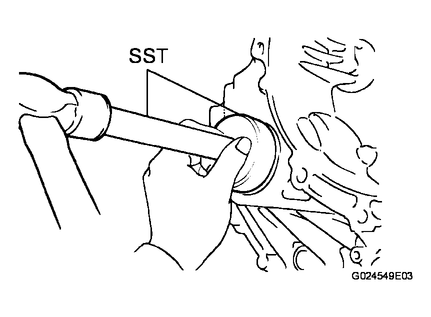
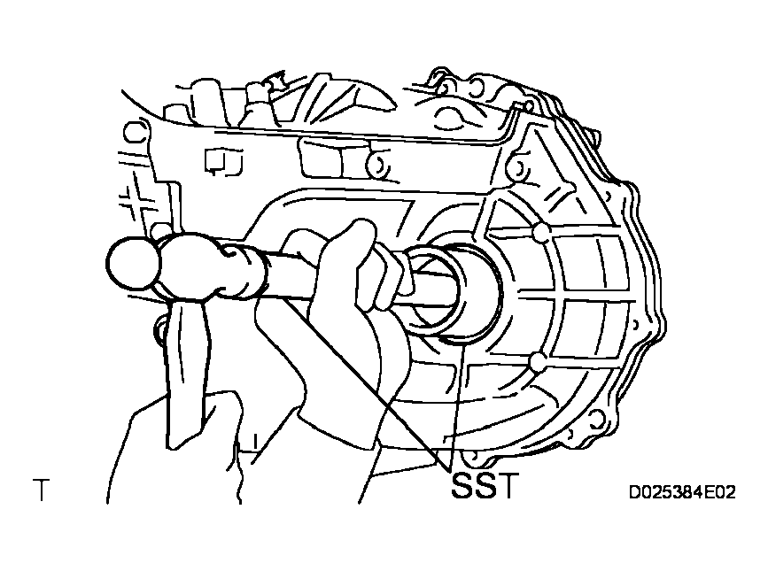

Differential Oil Seal: Replacement
WARNING: This page is about a different variant/trim than selected.
- REMOVE FRONT WHEEL
- REMOVE ENGINE UNDER COVER RH
- REMOVE ENGINE UNDER COVER LH
- DRAIN AUTOMATIC TRANSAXLE FLUID
- Remove the drain plug and gasket, and drain ATF.
- Install a new gasket and the drain plug.
Torque: 49 N*m (500 kgf*cm, 36 ft.*lbf)
- REMOVE FRONT DRIVE SHAFT ASSEMBLY
- Remove the front drive shaft (see REMOVAL ).
- REMOVE FRONT TRANSAXLE CASE OIL SEAL
- Using SST, pull out the oil seal.
SST 09308-00010
- Using SST, pull out the oil seal.
- INSTALL FRONT TRANSAXLE CASE OIL SEAL (for RH Side)
- Using SST and a hammer, tap in a new oil seal.

Courtesy of © TOYOTA, LICENSE AGREEMENT TMS1002SST 09554-14010, 09950-70010 (09951-07200)
Standard oil seal drive in depth: 1.5 to 2.5 mm (0.059 to 0.098 in.)
- Coat the lip of the oil seal with MP grease.
- Using SST and a hammer, tap in a new oil seal.
- INSTALL FRONT TRANSAXLE CASE OIL SEAL (for LH Side)
- Using SST and a hammer, drive in a new oil seal.

Courtesy of © TOYOTA, LICENSE AGREEMENT TMS1002SST 09726-27012 (09726-02041), 09950-70010 (09951-07200)
Standard oil seal drive in depth: 5.4 to 6.4 mm (0.213 to 0.252 in.)
- Coat the lip of the oil seal with MP grease.
- Using SST and a hammer, drive in a new oil seal.
- INSTALL FRONT DRIVE SHAFT ASSEMBLY
- Install the front drive shaft (see REASSEMBLY ).
- INSTALL ENGINE UNDER COVER LH
- INSTALL ENGINE UNDER COVER RH
- INSTALL FRONT WHEEL
Torque: 103 N*m (1,050 kgf*cm, 76 ft.*lbf)
- ADD AUTOMATIC TRANSAXLE FLUID
Fluid type: Toyota Genuine ATF TYPE T-IV
Standard capacity: 2.9 liters (3.1 US qts, 2.6 Imp. qts)
- INSPECT AUTOMATIC TRANSAXLE FLUID
- Inspect the automatic transaxle fluid (see AUTOMATIC TRANSAXLE FLUID ).
- INSPECT AND ADJUST FRONT WHEEL ALIGNMENT
- Inspect and adjust the front wheel alignment (see FRONT WHEEL ALIGNMENT ).
- CHECK ABS SPEED SENSOR SIGNAL
- Check the ABS speed sensor signal (see OPERATION CHECK ).